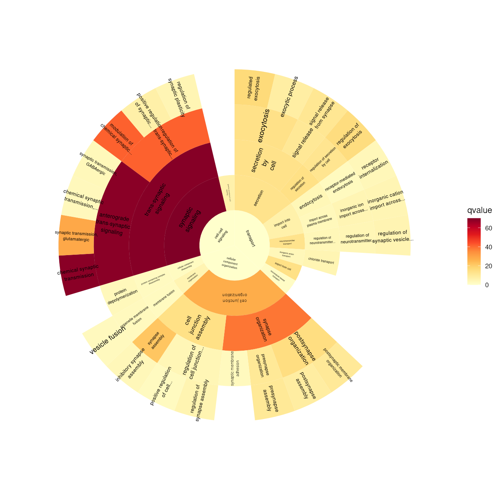
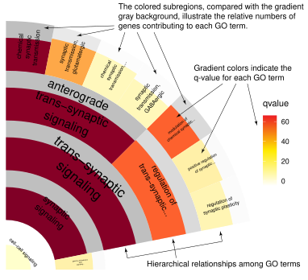

vignettes/GOfan.Rmd
GOfan.RmdAbstract
GOfan provides an intuitive approach to visualize Gene Ontology (GO) enrichment results. By converting complex GO DAGs into clean, circular representations, it allows researchers to quickly grasp the hierarchical structure and biological significance of enriched terms. The interactive and customizable visualizations facilitate exploration of key GO categories, enhancing interpretation and presentation of enrichment analyses.
Gene Ontology (GO) enrichment analysis is an essential approach for interpreting large-scale omics data. However, visualizing GO results in an informative and intuitive way remains challenging. Because GO terms form a directed acyclic graph (DAG) rather than a simple hierarchy, direct graph-based plots often appear cluttered and difficult to interpret. Meanwhile, common alternatives such as heatmaps or dot plots simplify the presentation but lose the hierarchical relationships among GO terms.
GOfan was developed to simplify GO enrichment
visualization while preserving the structural context of the ontology.
Inspired by the SynGO
visualization, GOfan represents GO terms in a sunburst
layout, where each ring corresponds to a hierarchy level and each
segment represents a GO term. This radial organization enables users to
focus on one or more biological categories and intuitively explore how
enriched terms are connected.
Any enrichment result containing GO identifiers can be visualized by
GOfan as sunburst plot. Users can map additional
information such as p-values or gene counts to colors, highlighting
significant biological patterns in a compact and publication-ready
figure. Future versions will further enhance the visualization by
incorporating additional visual cues such as size or shape.
By translating the complex GO DAG into a clean, circular
representation, GOfan helps researchers quickly grasp the
biological meaning of enrichment results through a clear and accessible
visualization.
if (!require("BiocManager", quietly = TRUE)) {
install.packages("BiocManager")
}
BiocManager::install("jianhong/GOfan")There are four main steps to visualize your data with
GOfan:
Step 1. Load the required library.
Step 2. Prepare the input data frame.
Step 3. Create a graph representing the hierarchical relationships among GO terms.
Step 4. Generate the sunburst plot.
library(ggplot2)
library(GOfan)
library(org.Dr.eg.db)
## load data
csv <- system.file("extdata", "GO.BP.enrichment.csv", package = "GOfan")
bp <- read.csv(csv, row.names = 1)
head(bp, n = 2)## ID p.adjust qvalue count
## GO:0099536 GO:0099536 1.505326e-70 69.91192 134
## GO:0099537 GO:0099537 1.242713e-69 68.99518 131
## build a graph of hierarchical GO term relationships.
g <- getGraph(bp, org = org.Dr.eg.db, onto = "BP")
## visualization
sunburstGO(bp, g,
org = org.Dr.eg.db, fill = "qvalue",
filterNodesByEdgeNumber = 0,
plotBy = "plotly"
)In the example above, we used the plotly package to visualize the results. One advantage of plotly is its interactivity. You can view all labels by hovering the mouse over each small cell, and clicking on a cell zooms into that GO term along with its offspring.
However, plotly has some limitations when do sunburst plot: legends are not available, and plots can only be saved as PNG files.
To address these issues, you can use ggplot2 for visualization.
With ggplot2, plots can be
saved in multiple formats (see ?ggsave),
including vector graphics, and you have greater flexibility in color
customization (see ?scale_fill_continuous.
In addition, by using the onlyKeep parameter, you can focus
on a specific subset of GO terms.
sunburstGO(bp, g,
org = org.Dr.eg.db, fill = "qvalue",
onlyKeep = c("GO:0099536", "GO:0046903", "GO:0034330"),
plotBy = "ggplot2"
) +
scale_fill_continuous(palette = "YlOrRd")
Moreover, you can customize the start and end positions of the polar plot to create a fan-shaped visualization.
sunburstGO(bp, g,
org = org.Dr.eg.db,
fill = "qvalue", sub_rect = "count",
onlyKeep = c("GO:0099536"),
plotBy = "ggplot2",
fontsize = 2,
start = 0, end = pi / 2
) +
scale_fill_continuous(palette = "YlOrRd")You can also incorporate a second factor into the plot. For example, the q-value can be shown by color, while the gene ratio for each category can be represented by the area proportion of the cell’s foreground to background color.

## R Under development (unstable) (2026-03-01 r89508)
## Platform: x86_64-pc-linux-gnu
## Running under: Ubuntu 24.04.4 LTS
##
## Matrix products: default
## BLAS: /usr/lib/x86_64-linux-gnu/openblas-pthread/libblas.so.3
## LAPACK: /usr/lib/x86_64-linux-gnu/openblas-pthread/libopenblasp-r0.3.26.so; LAPACK version 3.12.0
##
## locale:
## [1] LC_CTYPE=en_US.UTF-8 LC_NUMERIC=C
## [3] LC_TIME=en_US.UTF-8 LC_COLLATE=en_US.UTF-8
## [5] LC_MONETARY=en_US.UTF-8 LC_MESSAGES=en_US.UTF-8
## [7] LC_PAPER=en_US.UTF-8 LC_NAME=C
## [9] LC_ADDRESS=C LC_TELEPHONE=C
## [11] LC_MEASUREMENT=en_US.UTF-8 LC_IDENTIFICATION=C
##
## time zone: Etc/UTC
## tzcode source: system (glibc)
##
## attached base packages:
## [1] stats4 stats graphics grDevices utils datasets methods
## [8] base
##
## other attached packages:
## [1] org.Dr.eg.db_3.22.0 AnnotationDbi_1.73.0 IRanges_2.45.0
## [4] S4Vectors_0.49.0 Biobase_2.71.0 BiocGenerics_0.57.0
## [7] generics_0.1.4 GOfan_0.99.2 ggplot2_4.0.2
##
## loaded via a namespace (and not attached):
## [1] KEGGREST_1.51.1 gtable_0.3.6 xfun_0.56
## [4] bslib_0.10.0 htmlwidgets_1.6.4 crosstalk_1.2.2
## [7] vctrs_0.7.1 tools_4.6.0 tibble_3.3.1
## [10] RSQLite_2.4.6 blob_1.3.0 pkgconfig_2.0.3
## [13] data.table_1.18.2.1 RColorBrewer_1.1-3 S7_0.2.1
## [16] desc_1.4.3 lifecycle_1.0.5 compiler_4.6.0
## [19] farver_2.1.2 textshaping_1.0.4 Biostrings_2.79.4
## [22] BiocStyle_2.39.0 Seqinfo_1.1.0 htmltools_0.5.9
## [25] sass_0.4.10 yaml_2.3.12 lazyeval_0.2.2
## [28] plotly_4.12.0 pillar_1.11.1 pkgdown_2.2.0
## [31] crayon_1.5.3 jquerylib_0.1.4 GO.db_3.22.0
## [34] tidyr_1.3.2 cachem_1.1.0 tidyselect_1.2.1
## [37] digest_0.6.39 dplyr_1.2.0 purrr_1.2.1
## [40] labeling_0.4.3 fastmap_1.2.0 grid_4.6.0
## [43] cli_3.6.5 magrittr_2.0.4 withr_3.0.2
## [46] scales_1.4.0 bit64_4.6.0-1 rmarkdown_2.30
## [49] XVector_0.51.0 httr_1.4.8 igraph_2.2.2
## [52] bit_4.6.0 otel_0.2.0 ragg_1.5.0
## [55] png_0.1-8 memoise_2.0.1 evaluate_1.0.5
## [58] knitr_1.51 viridisLite_0.4.3 rlang_1.1.7
## [61] glue_1.8.0 DBI_1.3.0 BiocManager_1.30.27
## [64] jsonlite_2.0.0 R6_2.6.1 systemfonts_1.3.1
## [67] fs_1.6.6